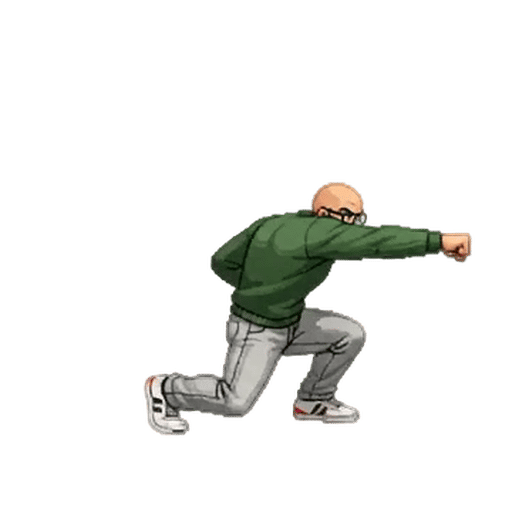
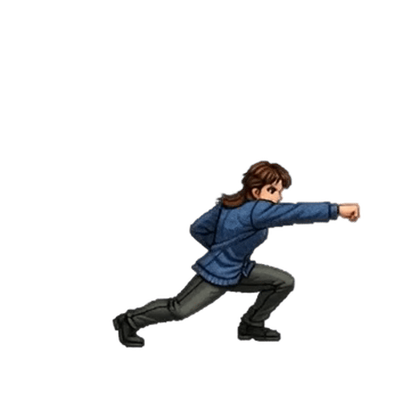
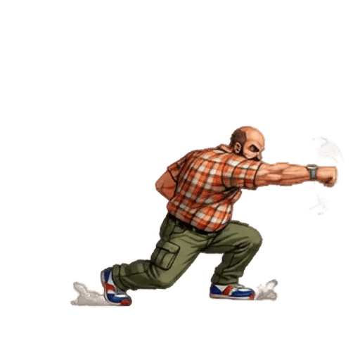
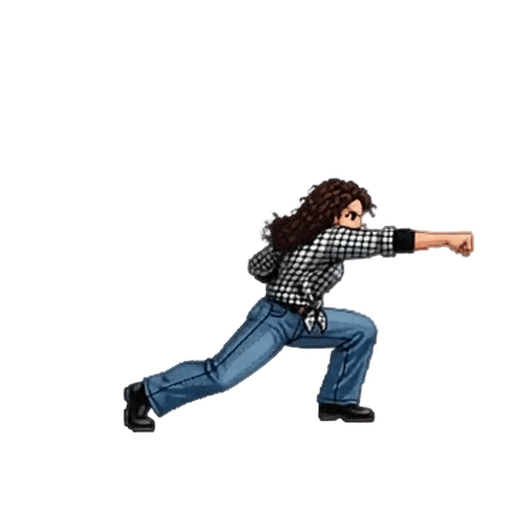
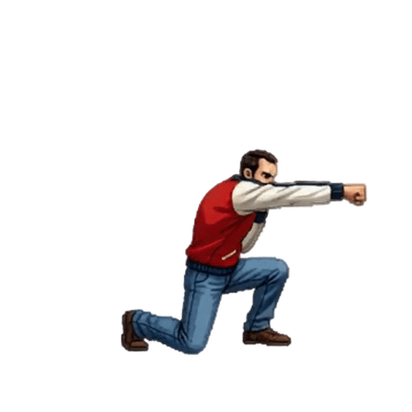
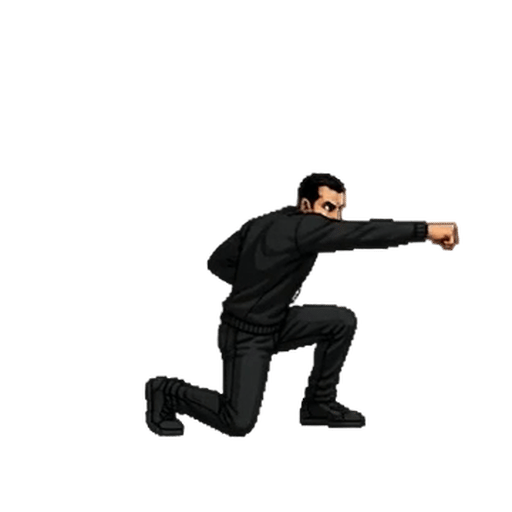
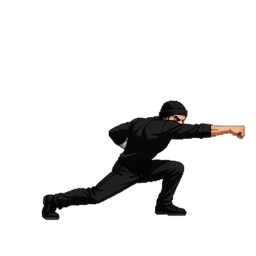
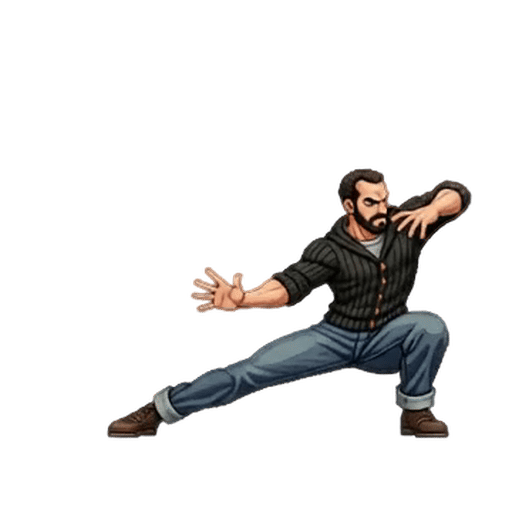
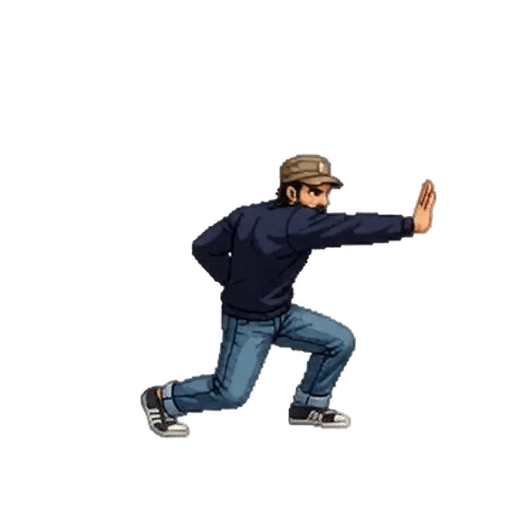

Apri Pugno medio basso nella demoTiming Pugno medio basso
Aggiornamento: 2026-11-22. Integrati 9 personaggi su 48. A velocita 1x il frame scelto di impatto principale inizia esattamente a 400 ms (0,40 s); il ciclo completo termina a 750 ms (0,75 s). La fase successiva all'impatto dura 350 ms (0,35 s).
Pippo usa l'andata seguita dagli stessi frame al contrario, senza raddoppiare il frame di inversione. L'ultimo frame del recupero e la guardia iniziale. Gli altri otto personaggi usano solo la sequenza sorgente in avanti, che contiene gia il recupero. Le scie presenti nei PNG provengono dai sorgenti AutoSprite.
Marsan include una riparazione locale della trasparenza della manica nei fotogrammi 8-11; la provenienza originale e gli hash precedenti restano nel manifest e nell atlas. Gli atlas referenziano le celle del PNG anche nel ritorno: i pixel non sono duplicati, ridimensionati o ricentrati. Le durate variabili sono incorporate nel catalogo offline e negli atlas, utilizzabili come riferimento per Godot. Gli fps medi non descrivono le due fasi: la tabella indica i millisecondi effettivi di ogni passo prima e dopo l'impatto.
La colonna Frame distingue le celle sorgente utilizzate dai passi della sequenza riprodotta, che includono il ritorno. I frame di sequenza in tabella partono da 1; gli indici sorgente partono da 0 e si riferiscono al foglio gia accorciato scaricato da AutoSprite. Nessun vecchio taglio e stato applicato una seconda volta. Tutti i frame dei fogli selezionati sono conservati.
Confronto riparazione manica di Marsan: prima, dopo e maschere delle sole zone modificate.
Il marcatore riguarda la posa scelta del colpo principale. Eventuali estensioni preliminari con altri bracci, scie grafiche e pose estese mantenute presenti negli asset approvati sono conservate e segnalate nelle note. Per questo alcune pose estese adiacenti possono comparire prima o dopo il marcatore. Riproduci tutte allinea le nove schede; modificare la velocita scala impatto e durata nella stessa proporzione.
Personaggi senza Pugno medio basso importato (39): ALEX, ANGELA, ANTONINO, BARBARA-FIOCCA, Bonazzi, Chiara-Molina, CHIARA-TONIOL, CONDELLO, DINO, EMMA, EROS, FARA, FRA-AMATO, FRANCESCA-RIVELLA, FRANCESCO-LEONI, GENNARO, Giordano, GIORGIO, JERRY, LIVIO, LUANA, MANU, MARCO-BALPO, Marco-Rossetti, MARIO, MARTINI, MATTEO, MIKE, MORI, PEIROLO, Simona, TOMMASO, ZICHELLA, Franco, Tamara, Patrick, Luca-Arcangeli, Cristian-Canino, Alessandro-Mantelli.
Scarica il report CSV / Timing JSON / Manifest e provenienza
| Personaggio | Posa scelta | Frame sorgente / riprodotti | Riproduzione | Frame impatto | Impatto | Fase successiva | Ciclo | Durata passo prima / dopo | Note | Asset |
|---|
| ALBERTO |  | 49 / 49 | Solo avanti | 26 / 49
sorgente 25 | 400 ms | 350 ms | 750 ms | 16.000 / 14.583 ms | Posa di impatto scelta visivamente; recupero in guardia accovacciata gia incluso, solo avanti. | Atlas e sequenza
cmwrq7j1v002josuqjf0sth87 |
|---|
| Elisa |  | 49 / 49 | Solo avanti | 23 / 49
sorgente 22 | 400 ms | 350 ms | 750 ms | 18.182 / 12.963 ms | Posa di impatto scelta visivamente; recupero in guardia accovacciata gia incluso, solo avanti. | Atlas e sequenza
cmwrq9for00afqvcva1hyseuj |
|---|
| FABIO-CLARA |  | 49 / 49 | Solo avanti | 24 / 49
sorgente 23 | 400 ms | 350 ms | 750 ms | 17.391 / 13.462 ms | Posa di impatto scelta visivamente; recupero in guardia accovacciata gia incluso, solo avanti. Marcatore sulla prima posa piena dopo la scia incorporata nel sorgente. | Atlas e sequenza
cmwrq7k6g001g10ooa4jit7pu |
|---|
| FRA-TAVARONE |  | 45 / 45 | Solo avanti | 16 / 45
sorgente 15 | 400 ms | 350 ms | 750 ms | 26.667 / 11.667 ms | Posa di impatto scelta visivamente; recupero in guardia accovacciata gia incluso, solo avanti. | Atlas e sequenza
cmwrq07a500bx13vv0el2aa4x |
|---|
| MARSAN |  | 49 / 49 | Solo avanti | 13 / 49
sorgente 12 | 400 ms | 350 ms | 750 ms | 33.333 / 9.459 ms | Posa di impatto scelta visivamente; recupero in guardia accovacciata gia incluso, solo avanti. Riparazione locale della manica nei fotogrammi 8-11 (indici 7-10): opacita ripristinata, nessuna modifica al timing. | Atlas e sequenza
cmwrrzgou0076rualkfghv7yl |
|---|
| Oscar |  | 49 / 49 | Solo avanti | 22 / 49
sorgente 21 | 400 ms | 350 ms | 750 ms | 19.048 / 12.500 ms | Posa di impatto scelta visivamente; recupero in guardia accovacciata gia incluso, solo avanti. | Atlas e sequenza
cmwrpresm004k13vvrt53svq0 |
|---|
| PEPPO |  | 45 / 45 | Solo avanti | 19 / 45
sorgente 18 | 400 ms | 350 ms | 750 ms | 22.222 / 12.963 ms | Posa di impatto scelta visivamente; recupero in guardia accovacciata gia incluso, solo avanti. | Atlas e sequenza
cmwrr4mya00c1vk1j2ktppy1z |
|---|
| PIPPO |  | 49 / 97 | Avanti e indietro | 37 / 97
sorgente 36 | 400 ms | 350 ms | 750 ms | 11.111 / 5.738 ms | Recupero assente nel foglio: ritorno al contrario senza duplicare il fotogramma finale. Marcatore sul gesto finale a mano aperta; rotazione e scia intermedie sono presenti nel sorgente AutoSprite. | Atlas e sequenza
cmwrrkukd00gwvk1j59gkwb8q |
|---|
| SBOZ |  | 49 / 49 | Solo avanti | 23 / 49
sorgente 22 | 400 ms | 350 ms | 750 ms | 18.182 / 12.963 ms | Posa di impatto scelta visivamente; recupero in guardia accovacciata gia incluso, solo avanti. | Atlas e sequenza
cmwrq7i7z002fosuqjzchmpo6 |
|---|